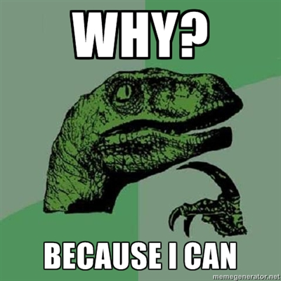

o autoru (vanity page)
Aleksandar Blagotić
- trenutno web-developer / R programer pri Rapporter Ltd.
- 5+ godina iskustva: R, webdev, GNU/Linux
- prokrastinacija osnovnih studija psihologije (Level 3 Apsolvent)
kontakt:
o R-u...
- R je programski jezik za statističku analizu i grafičko prikazivanje podataka
-
nastao kao open-source implementacija programskog jezika S, Chambers 1976.
- geek humor: referenca: programski jezik C
-
autori Ross Ihaka, Robert Gentleman
- R prema početnim slovima imena autora?
prednosti R-a
- open-source
- cross-platform: dostupan za Linux, Windows i MacOS
- pragmatičan - pisan je od strane statističara za statističare (što možda i nije tako dobra ideja...)
- velika korisnička baza: preko 2 miliona korisnika
- odlične mogućnosti grafičkog prikazivanja podataka
- odlična dokumentacija
-
ekstenzibilnost: preko 4.5K paketa na CRAN mreži
length(available.packages()[, 1])
šta je R paket?
- binarna datoteka: arhiva dokumentovanih R skripti (i još ponešto preko...)
- add-on/ekstenzija/plugin koji proširuje osnovnu funkcionalnost R-a
ostale distributivne mreže R paketa
zašto kreirati paket?

ne, ozbiljno... zašto? i kada?
-
kada raspolažete trustom R skripti/funkcija koje:
- su namenjene rešavanju konkretnog tipa problema ili se odnose na određenu oblast
- želeli biste da dokumentujete funkcije koje svakodnevno koristite
- mislite da bi drugima bile od pomoći
-
zašto?
- "čitak" kod
- manje bug-ova
- efikasnija komunikacija
- veća produktivnost
- prvo pretražite! (među 4500+ paketa naćiće se jedan koji vam treba)
potrebno predznanje
- R, na primer, može biti od koristi...
- LaTeX je dobrodošao pri pisanju dokumentacije
- poželjno je znati neki od CVS: git, svn, bzr
digresija: git
- softver za upravljanje izvornim kodom
-
servisi:
git
-
osnovne komande:
- git init
- git add
- git commit
- git push
-
bitne konfiguracione datoteke:
- demonstracija: postaviti paket na neki od git servisa
struktura paketa
- package.skeleton()
-
imati u vidu:
- objekte unutar globalnog okruženja: ls()
- pakete i objekte u search path: search()
- 101 funkcija: hello.world()
DESCRIPTION
- Debian Control File: ?read.dcf
- obavezna polja: Package, Version, License, Description, Title, Author, Maintainer
- ASCII, ako nije moguće, onda navesti Encoding (UTF8)
- Author / Maintainer
-
Depends
- nema svrhe navoditi R bez konkretne verzije/SVN revizije
- base paket se uvek koristi
- za eksterne pakete SystemRequirements
- Suggests za pakete koji se nalaze u primerima, testovima ili vinjetama
DESCRIPTION
-
neka pravila:
- paketi čiji je Namespace potreban da bi se paket učitao sa library() navesti u Imports
- paketi koji su neophodni za učitavanje paketa u Depends
- za uspešno izvršavanje komande R CMD check navesti pakete bilo u Depends, Suggests ili Imports
- za testove, koristiti Suggests ili Enhances
- za pakete potrebne zbog podataka (datasets) ili vinjeta koristiti Suggests
-
precizno navesti podatke o verzijama paketa:
- prilikom pozivanja komande library() proveravaju se zavisnosti verzija paketa (dependencies)
- install.packages() proverava Depends, Imports i Suggests za dependencies = TRUE
DESCRIPTION
- URL - linkovi odvojeni , ili
- BugReports - URL prema interfejsu za prijavljivanje grešaka u paketu (bugtracker)
- Collate - redosled učitavanja datoteka (default: C locale)
- LazyData (pre R v2.14 LazyLoad)
- Language - ukoliko dokumentacija nije na engleskom
- License, Copyright
ostale bitne datoteke
- NEWS ili ChangeLog - promene u novim verzijama paketa
- LICENSE
- INSTALL
- inst/CITATION - bibentry()
- README
- .Rbuildignore
poddirektorijumi
- R - za R skripte (koristiti .R ekstenziju)
- man - za dokumentaciju (koristiti roxygen2)
- data - za podatke koji idu uz paket (bilo .rda ili .R)
- demo - skripte koje demonstriraju funkcionalnost paketa demo()
- inst - poddirekorijumi će biti prekopirani u instalacioni folder
- src - za C, C++ ili Fortran datoteke
- exec - za izvršne datoteke
- po - za lokalizaciju
-
vignettes - za vinjete, Sweave je neophodan!
- ne koristiti R, data, demo, exec, libs, man, help, html i Meta
- testovi, dodatne datoteke, itd.
dokumentacija
- roxygen2 - implementacija doxygen za R: dokumentacija unutar R skripti
- LaTeX-olika sintaksa: \itemize, \enumerate, \emph, \code, \link, itd.
- izbegavati "ručno" pisanje .Rd datoteka, koristite roxygen!
- ##'
roxygen
- @title - prva linija
-
@description - drugi pasus
- ukoliko je izostavljen, roxygen će je zameniti sa @title
- @details - sve od trećeg pasusa pa na dalje
roxygen
- @param - dokumentacija formalnog argumenta funkcije
- @keywords
- @return - opis objekta koji data funkcija "vraća"
- @examples (\dontrun{})
- @export - da li je funkcija "vidljiva", tj. mogu da je koriste ostali (nije specifična za paket, interna)
- @author Ime Prezime
roxygen
- @seealso
- @references
- @aliases
- @usage - primeri upotrebe date funkcije
- @method, @S3method
- @genericMethods - za S4 klase
- roxygenise()
R CMD
- build
-
check
- --as-cran za kompatibilnost sa CRAN konvencijama
- install
- voditi računa o .Rprofile (--vanilla)
Test Driven Development
- pišite testove!!!
- install.package('testthat')
- inst/tests
- context()
- test_that()
- expect_that()
- test_file()
- test_dir()
devtools
- sadrži funkcije koje pomažu razvoj paketa
- autor Hadley Wickham - garancija kvaliteta :-)
-
korisne funkcije
- install_github/
- load_all()
ostalo
-
korisne alatke:
-
editori/GUI:
-
web:
←
→
/
#